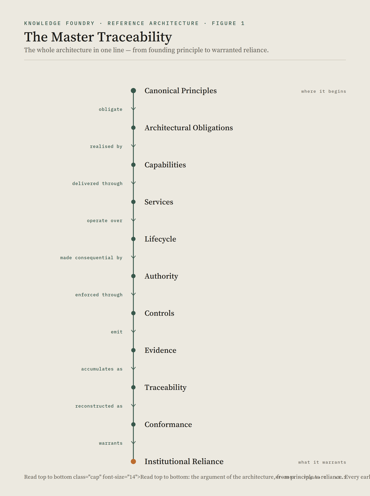

KF-3009 · Architectural Crosswalks and Traceability
The navigation layer of the Knowledge Foundry Reference Architecture — how the whole fits together

Principle (KF-1000) → Methodology (KF-2000) → Reference Architecture (KF-3000)
→ Domains (KF-3001–3005) → Integration (KF-3006) → Conformance (KF-3007) → Authority (KF-3008)
→ ▸ Crosswalks and Traceability (KF-3009) → Implementation (KF-4000)The architecture is complete at KF-3008. Principles, lifecycle, materialityMateriality — the degree to which an object, claim, decision or transition may affect consequential action, reliance, obligation, exposure, representation or preservation (KF-2003). Vocabulary →, reference architecture, integration, conformance and authority together provide everything essential. This document therefore introduces no new architectural domain and no new first-order concept. It performs a different role: it is the architecture’s synthesis — the atlas that accompanies the constitutional text. The constitution defines the rules; the atlas helps readers see where everything sits and how the parts relate, without creating new law.
Purpose
The Architectural Crosswalks and Traceability document provides the navigational layer of the Knowledge Foundry Reference Architecture. It maps architectural concepts, responsibilities and relationships across the architecture, clarifies document ownership, and demonstrates how the architecture forms a coherent, navigable and traceable system whose architectural integrity can be understood without duplicating its normative content.
This is navigation, not architecture. Every entry below points to a home document that owns the concept; KF-3009 owns only the relationships between the documents — the map, the crosswalks, the traceability matrices and the relationship catalogue. Where a crosswalk here and a home document appear to differ, the home document governs and this document is corrected.
Navigational Principle
Every architectural concept has one authoritative home. Relationships may be described elsewhere, but normative ownership is never duplicated. KF-3009 exists to preserve that discipline.
That single rule governs the whole document. It is why KF-3009 can map, cross-reference and trace freely without ever becoming a competing source of truth: it describes where things live and how they relate, and defines only the relationships themselves.
Figure 1 · The Master Traceability
The single diagram that explains the entire architecture — the programme’s architectural signature. It threads every layer, from the obligations the Canon imposes to the reliance the institution is finally warranted in placing:
Canonical Principles
▼ obligate
Architectural Obligations
▼ realised by
Capabilities
▼ delivered through
Services
▼ operate over
Lifecycle
▼ made consequential by
Authority
▼ enforced through
Controls
▼ emit
Evidence
▼ accumulates as
Traceability
▼ reconstructed as
Conformance
▼ warrants
Institutional RelianceThis figure is referenced throughout the document, and §11 reads it in full.
What this document does and does not own
KF-3009 defines no new ontology, no new lifecycle, no new authority and no new governance mechanism. It is the architecture’s index, atlas and navigation layer. What it does own — because these are relationships, not concepts — are: the Concept-Ownership register (§4), the Relationship Catalogue (§10), and the master traceability matrices (§§6–9). These were already promised to KF-3009 by the closing sections of KF-3002–3005 (“KF-3009 preserves traceability from principle through capability, service, record and control”).
1 · Introduction
Scope. The reading guide, the architecture map, concept ownership, the relationship catalogue, and the principle / obligation / lifecycle / materiality crosswalks, plus reference indexes and reserved extensions.
Audience. Every reader of the Reference Architecture, especially those arriving after KF-3000 who need to orient before going deep, and maintainers who must keep the series coherent as it evolves.
Relationship to the Reference Architecture. KF-3009 sits beside KF-3000 as its companion: KF-3000 opens the architecture, KF-3009 helps navigate it. It is the document every future reader should read second.
2 · How to Read the Architecture
Different readers enter at different places. This is the shortest path to what each needs:
| Reader | Enter at | Then read |
|---|---|---|
| Architect | KF-3000 Reference Architecture | KF-3001–3005, then KF-3006 |
| Engineer | KF-3006 Integration Model | KF-3003 Services, KF-3005 Control |
| Reviewer / Assessor | KF-3007 Conformance Framework | KF-3004 Records, KF-3006 §10 |
| Governance lead | KF-3008 Authority Framework | KF-2003 Materiality, KF-2001 Lifecycle |
| Implementation team | KF-4000 Knowledge Operating System | KF-3006, KF-3007, KF-3008 |
| Executive / sponsor | KF-0001 Architecture Map, then this §14 | KF-1000 Canon (purpose) |
| Researcher | KF-L001 Literature Landscape | KF-1000 Canon |
No reader should have to read the series front to back to become productive; each path above is sufficient to act, and the crosswalks below fill in the rest on demand.
3 · The Architecture Map
The authoritative one-page orientation. (Its standalone pull-out is KF-0001 · Architecture Map; this is the same map, seated in its atlas.)
KF-L001 · Literature Landscape
│ evidence
▼
KF-1000 · Canon
│ principles
▼
KF-2000 · Methodology
(2001 Lifecycle · 2002 Practices · 2003 Materiality)
│ methods
▼
KF-3000 · Reference Architecture
│ domains
┌─────────────────────────────┼─────────────────────────────┐
│ 3001 Principles · 3002 Capabilities · 3003 Services │
│ 3004 Records · 3005 Control │
│ ─────────────────────────────────────────────────────── │
│ 3006 Integration ◀ how it works │
│ 3007 Conformance ◀ how we know │
│ 3008 Authority ◀ who may make it consequential │
│ 3009 Crosswalks ◀ how it all fits (this document) │
└─────────────────────────────┬─────────────────────────────┘
│ realised by
▼
KF-4000 · Knowledge Operating System
▼
MacroLab (domain deployment)
Programme-wide navigation: KF-0001 Map · KF-0002 Controlled VocabularyRead by architectural layer, the same series stacks into four bands:
Constitution │ KF-1000
───────────────┼───────────────────────
Method │ KF-2000 (2001–2003)
───────────────┼───────────────────────
Architecture │ KF-3000–3009
───────────────┼───────────────────────
Implementation │ KF-40004 · Concept Ownership
The rule that keeps the architecture free of duplicated definitions: every concept has exactly one primary home. When a concept appears in several documents, one owns it and the others reference it.
| Concept | Primary home | Secondary references |
|---|---|---|
| Canonical PrincipleCanonical Principle — an enduring obligation true of any governed knowledge system, admitted only if it survives the two-question test (KF-1000 Part III). Vocabulary → · Constitutional InvariantConstitutional invariant — one of the five properties whose loss would make a system cease to be a governed knowledge system: inspectability, justification, provenance, governed evolution, human accountability (KF-1050). Vocabulary → · Governance PrimitiveGovernance Primitive — one of the six operations by which warrant is conferred: evidence, authority, provenance, validation, versioning, reversibility (KF-1104). Vocabulary → | KF-1000 | KF-3001, KF-3006, KF-3009 |
| Operational Knowledge ObjectOperational Knowledge Object — the unit of design: a versioned representation together with its attached evidence, justification and acceptance-state (KF-1101). The system governs the object, never "knowledge itself". Vocabulary → (defined KF-1101; architectural unit KF-3000 §2) | KF-1000 | KF-3000, KF-3004 |
| Lifecycle — stages, transitions, lifecycle invariantsLifecycle invariant — one of the six continuously checkable properties of an object at every instant: single identity, attributable transitions, justified transitions, inspectable transitions, provenance always present, lineage preserved (KF-2001). Vocabulary → | KF-2001 | KF-3005, KF-3006, KF-3008 |
| Engineering Practice | KF-2002 | KF-3002, KF-3000 §22 |
| Materiality · Assurance ClassAssurance class — the ordinal grade (A0 Exploratory · A1 Working · A2 Routine · A3 Consequential · A4 Critical) that sets the depth of assurance required; attaches to the release / scope of reliance (KF-2003). Vocabulary → · Governance OverlayGovernance overlay — an orthogonal attribute (regulated, confidential, public, client-facing, legally-privileged) adding obligations without changing class (KF-2003). Vocabulary → | KF-2003 | KF-3005, KF-3007, KF-3008 |
| Architectural Principle · System Invariant · Interaction Constraint | KF-3001 | KF-3005, KF-3007 |
| Capability | KF-3002 | KF-3003, KF-3000 §23 |
| Service | KF-3003 | KF-3004, KF-3005, KF-3006 |
| Information / Record Object · Event-native evidence (record model) | KF-3004 | KF-3001 (IC-24), KF-3007 |
| Gate · Control · Transition pattern | KF-3005 | KF-3006, KF-3007 |
| Integration — relationships, behaviour, patterns, events | KF-3006 | KF-3007, KF-3009 |
| Conformance · Conformance ClaimConformance claim — an assertion that an object is governed, accepted, current or reliable, reconstructable to the depth its reliance requires (KF-3007). Vocabulary → · Findings · the four tests | KF-3007 | KF-3006, KF-3008, KF-4000 |
| Authority · Delegation · Institutional Reliance | KF-3008 | KF-2001, KF-2003, KF-3007, KF-3009 |
| Crosswalks · Traceability matrices · Relationship Catalogue | KF-3009 | KF-3006 §4, KF-3001 §24 |
| Controlled Vocabulary · Required Distinctions · user-facing terms | KF-0002 | KF-3009 §13.3 |
| Architecture Map (one-page) | KF-0001 | KF-3009 §3 |
| Implementation — components, technology, deployment | KF-4000 | KF-3006, KF-3007, KF-3008 |
| Worked examples · canonical slice · case studies | KF-5000 / KF-5001 | KF-2001, KF-3006, KF-3007, KF-3008 |
Where two documents touch one concept, one holds the authoritative treatment and the other holds an adjacent or derived view — the same single-owner discipline the record model applies to data (KF-3004 §7).
5 · Concept Relationship Crosswalk
For each core concept: what it depends on, what it supports, and where it is referenced. This is the “if I change this, what else is affected?” table.
| Concept | Depends upon | Supports | Most significant consumers |
|---|---|---|---|
| Lifecycle | Canon (II, X) | Authority, Conformance, Control | KF-3005, KF-3006, KF-3008 |
| Materiality | Canon; Lifecycle | Authority depth, Evidence depth, Review cadence | KF-3005, KF-3007, KF-3008 |
| Capability | Canon; Lifecycle; Practices | Services | KF-3003, KF-3000 §23 |
| Service | Capability | Records, Transitions, Controls | KF-3004, KF-3005, KF-3006 |
| Control | Invariants; Obligations | Gates | KF-3005, KF-3007 |
| Authority | Lifecycle (Accept); Canon III | Acceptance, Release, Retirement | KF-3007 (Authority dimension), KF-2003 |
| Evidence (event-native) | Transitions; Records | Traceability, Conformance | KF-3006 §9, KF-3007 §10 |
| Conformance | Obligations; Evidence; Traceability | Institutional reliance | KF-3008, KF-4000 |
| Institutional Reliance | Authority; Conformance | (the purpose the architecture serves) | KF-1204, KF-2003 |
6 · Principle Traceability (constitutional matrix)
Every Canonical Principle is realised somewhere in the architecture. This matrix is the constitutional traceability the Canon requires (KF-1301): a principle with no realisation would be an aspiration, not an obligation.
| Canonical Principle | Principal architectural realisation |
|---|---|
| I — governs OKOsOKO — the unit of design: a versioned representation together with its attached evidence, justification and acceptance-state (KF-1101). The system governs the object, never "knowledge itself". Vocabulary →, not knowledge | OKO as architectural unit (KF-3000 §2); Object Registry (SVC-01); single-identity invariant |
| II — engineered as a lifecycle | Lifecycle (KF-2001); Lifecycle & Control Architecture (KF-3005) |
| III — collective authorisation | Authority Framework (KF-3008); Acceptance (SVC-06); GATE-ACC-01 |
| IV — governance is constitutive | Governance Primitives across services; Controls (KF-3005); Conformance (KF-3007) |
| V — modality redistributes labour, not obligation | Modality-independence invariant (KF-3000 §3); human-accountability boundary (KF-3006 §5.3) |
| VI — engineered, collective, governed at once | Architectural Integration Model (KF-3006) |
| VII — trust is a property of transitions over time | Provenance & lineage records (KF-3004); Temporal Continuity (SVC-19); continuous conformance (KF-3007 §16) |
| VIII — inspectable justification per transition | Justification (SVC-05); justified-transition invariant; event-native evidence (KF-3004 §5.2) |
| IX — explainable across modality | Explainability control (CTRL-EXP-01); Application & Outcome (SVC-13) |
| X — designed for governed evolution | Version & Lineage (SVC-09); Evolve gate (GATE-EVO-01); the lifecycle loop |
7 · Obligation Traceability (complete lineage)
One level below principles. Each material obligation can be traced along a single lineage from constitutional source to demonstrated conformance — the chain KF-3007 reconstructs:
Canonical Principle
▼ handed to method (KF-1301)
Architectural Obligation
▼ realised by
Architecture (capability · service · gate · control · record)
▼ instantiated in
Implementation (KF-4000)
▼ emits
Evidence (event-native)
▼ reconstructed as
ConformanceWorked lineage — justified transition. Principle VIII → obligation “no state advances without recorded warrant” → realised by Justification Service (SVC-05), GATE-JUS-01 and the justified-transition invariant → instantiated by a deployment’s justification store → emits the justification and transition records → reconstructed by KF-3007 Test 4 as the claim “this transition carried its warrant.” No link in this chain is optional for a material obligation; the depth of each is graded by assurance class (KF-2003).
This lineage is the minimum reconstruction path required for any material conformance claim. Additional evidence may exist, and higher assurance classes require more of it, but no conforming implementation may omit one of these architectural stages — a claim with a broken link in the chain is Not Assessable (KF-3007 §13).
8 · Lifecycle Crosswalk
Each lifecycle stage, read across its architectural participants. This is the single-page operational reference for “what does this stage require?”
| Stage | Authority (KF-3008) | Principal service | Principal gate | Principal control | Evidence emitted | Primary conformance dimension (KF-3007 §6) |
|---|---|---|---|---|---|---|
| Capture | Creation | SVC-01 Object Registry | GATE-REG-01 | CTRL-ID-01/02 | Identity, Intake, Provenance Seed | Structural |
| Structure | — | SVC-02 Representation | GATE-STR-01 | CTRL-STA-01 | Structured Representation, Metadata | Structural |
| Evaluate | Evaluation | SVC-04 Evaluation | GATE-EVA-01 | CTRL-EVA-01 | Quality Assessment, Verdict | Evidence |
| Justify | Evaluation | SVC-05 Justification | GATE-JUS-01 | CTRL-JUS-01 | Justification, Assumptions, Rationale | Evidence |
| Accept | Acceptance | SVC-06 Authority & Acceptance | GATE-ACC-01 | CTRL-AUT-01, CTRL-ACC-01 | Acceptance, Scope-of-Reliance | Authority |
| Operationalise / Release | Publication | SVC-12 / SVC-10 | GATE-REL-01 | CTRL-REL-01, CTRL-DEP-01 | Actionable Form, Release | Governance |
| Govern | Stewardship | SVC-07 Stewardship & Review | GATE-REV-01 | CTRL-STW-01, CTRL-REV-01 | Review, Stewardship records | Governance |
| Apply | — (use under permission) | SVC-13 Application & Outcome | GATE-APP-01 | CTRL-EXP-01, CTRL-OUT-01 | Application, Explanation, Outcome | Behavioural |
| Evolve | Revision | SVC-09 Version & Lineage | GATE-EVO-01 | CTRL-VER-01, CTRL-LIN-01 | Version, Change, Lineage | Lifecycle |
| Retire | Retirement | SVC-14 Retirement & Preservation | GATE-RET-01 | CTRL-LIN-01 | Retirement, Historical Object | Traceability |
Every row’s evidence is emitted by the act (event-native), and its conformance is assessed on the KF-3007 Authority, Lifecycle and Evidence dimensions.
9 · Materiality Crosswalk
How assurance class propagates through the architecture — the single value that grades authority, evidence, review, monitoring and conformance at once (KF-2003; KF-3007 §11; KF-3008 §12).
| Class | Required authority | Evidence depth | Review | Monitoring | Conformance depth |
|---|---|---|---|---|---|
| A0 Exploratory | none (provenance only) | minimal, event-native | none required | none | shallow, rare |
| A1 Working | named owner | basic + versioning | collaborative | on change | light |
| A2 Routine | authorised acceptance role | defined scope of use | periodic | currency checks | standard |
| A3 Consequential | confirmed acceptance authority; separation begins | independent, counter-evidence | independent review | active | deep |
| A4 Critical | accountable body; segregation of duties | comprehensive, independent | formal + independent | continuous | full, reconstructable end-to-end |
The six lifecycle invariants hold identically across every row; only the depth above that floor scales.
10 · The Relationship Catalogue
The permanent home of the canonical relationship vocabulary first stated in KF-3006 §4.1. The relationships defined below constitute the canonical architectural vocabulary for expressing relationships throughout the Knowledge Foundry programme. New relationship types shall not be introduced unless adopted into this catalogue. Every architectural diagram in the programme draws its arrows from here, so that a relationship always means one thing. These are collected, not invented here.
| Relationship | Category | Reads as |
|---|---|---|
| constrains | normative | Principle / interaction constraint → element |
| realises | implementation | Capability → Service |
| invokes | behavioural | Transition → Service |
| consumes | information | Service → Information object (read) |
| produces | information | Service / Transition → Information object |
| evaluates | governance | Gate → Control |
| protects | assurance | Control → Obligation / Invariant |
| generates | evidential | Transition / Obligation → Evidence |
| traces | provenance | derived state → source; successor → predecessor |
| delegates | authority | Authority → Authority (bounded) |
Three structural relationships support composite decisions and grading: references (decision → authoritative record, without copying it), attributed-to (transition → actor / authority), and graded-by (obligation depth → assurance class). Supersession and governance oversight are read as instances of traces (lineage) and constrains (policy) respectively, not as separate primitives.
11 · Reading the Master Diagram
Figure 1 (near the front of this document) is the single diagram that explains the entire architecture: it threads every layer, from the obligations the Canon imposes to the reliance the institution is finally warranted in placing. Every earlier diagram in the series is a segment of it — KF-3006 Figure 1 is its Principles-to-Conformance span; KF-3008 Figure 1 is its Authority-to-Reliance span. Read whole, it is the architectural argument of Knowledge Foundry in a single column, and the reason the series ends here, with synthesis rather than another framework. It is the programme’s architectural signature — the figure future presentations, papers and talks should reach for first.
12 · Reading Paths (recommended order by role)
- Executive / sponsor — KF-0001 → KF-1000 (purpose) → Figure 1 → KF-3009 §14.
- Reader (general) — KF-0001 → KF-3000 → KF-3006 → this document.
- Architect — KF-3000 → KF-3001 → KF-3002 → KF-3003 → KF-3004 → KF-3005 → KF-3006.
- Implementer — KF-3006 → KF-3003 → KF-3005 → KF-3007 → KF-3008 → KF-4000.
- Governance officer — KF-1000 → KF-2001 → KF-2003 → KF-3008 → KF-3007.
- Researcher — KF-L001 → KF-1000 → KF-3000 → KF-3006.
13 · Reference Tables
13.1 Document Index
| ID | Title | Role |
|---|---|---|
| KF-L001 | Literature Landscape | evidence |
| KF-1000 | Canon | principles |
| KF-2001 | Operational Knowledge Object Lifecycle | method |
| KF-2002 | Engineering Practices | method |
| KF-2003 | Materiality and Assurance | method |
| KF-3000 | Reference Architecture | architecture (umbrella) |
| KF-3001 | Architectural Principles and Invariants | domain |
| KF-3002 | Capability Model | domain |
| KF-3003 | Service Architecture | domain |
| KF-3004 | Information and Record Model | domain |
| KF-3005 | Lifecycle and Control Architecture | domain |
| KF-3006 | Architectural Integration Model | behaviour |
| KF-3007 | Architectural Conformance Framework | assurance |
| KF-3008 | Architectural Authority Framework | institutional |
| KF-3009 | Architectural Crosswalks and Traceability | navigation (this) |
| KF-4000 | Knowledge Operating System | implementation |
| KF-5000 | Exemplars & Case Studies | illustrative (series note) |
| KF-5001 | Canonical Vertical Slice (four-day-week Brief) | illustrative exemplar |
| KF-0001 | Architecture Map | navigation (one-page) |
| KF-0002 | Controlled Vocabulary | navigation (terminology) |
13.2 Figure Index
| Figure | Home | Shows |
|---|---|---|
| Integration Spine | KF-3006 Fig. 1 | Principles → Conformance |
| Conformance Chain | KF-3007 Fig. 1 | Obligation → Claim → Evidence → Assessment → Finding |
| Why Authority Belongs | KF-3008 Fig. 1 | Institution → … → Institutional Reliance |
| Master Traceability | KF-3009 Fig. 1 | the full architectural column |
13.3 Concept Index and Glossary
For any term’s authoritative definition, see the primary home in §4; for controlled definitions, required distinctions and the user-facing vocabulary, see KF-0002 · Controlled Vocabulary. KF-3009 does not redefine terms; it locates them.
14 · Architectural Evolution
The architecture is designed to change without losing coherence. Two distinct governance modes keep evolution disciplined — and the distinction between adding architecture and changing it is itself load-bearing.
14.1 Controlled Extension (new concepts)
Adding to the architecture. The numbering space is reserved rather than filled ad hoc:
- KF-3010+ — reserved for future architectural domains, admitted only if they pass the KF-3000 Architectural Admission Test and own a concept no existing document owns.
- Deeper treatments — a dedicated temporal or dependency model, say — would extend, not revise, the existing domains, and would be traced here.
- Discipline — no new document may duplicate a concept owned in §4; a proposed addition that would must instead amend the owning document. This is the Navigational Principle applied to growth.
14.2 Controlled Revision (existing concepts)
Changing what already exists. Revision follows the inheritance rule the Canon fixes: a lower level may change how it satisfies a higher one, but may not silently revise the higher one.
- Amend at the home — a concept is revised only in its owning document (§4); every secondary reference then inherits the change.
- Constitutional amendments — a change to a Canonical Principle is made against the Landscape’s evidence and propagated downward (KF-1000); it is never overridden quietly in a lower document.
- Re-trace after revision — when any home document changes, the crosswalks here and the conformance completeness check (KF-3007 §7.1) are re-run to confirm coverage still holds.
The series is considered conceptually complete at KF-3008; anything beyond elaborates, operationalises or validates that core. Extension adds a new home; revision changes an existing one; neither duplicates a concept already owned.
15 · Summary
The Knowledge Foundry Reference Architecture is intentionally modular. Architectural understanding therefore depends not only on the individual documents but on the relationships that bind them together. This document provides those relationships — the map, the ownership boundaries, the crosswalks, the relationship catalogue and the master traceability — ensuring that the architecture may continue to evolve while remaining coherent, navigable and traceable.
The series answers six questions in order: what is the architecture (KF-3000), what are its domains (KF-3001–3005), how do they operate together (KF-3006), how is its integrity demonstrated (KF-3007), who may legitimately make it consequential (KF-3008), and how does the whole fit together (KF-3009). Ending with synthesis rather than another specialised framework is the point: the last document is the one that makes all the others easier to understand and maintain.
Together these documents establish a complete architectural lineage from constitutional principle to institutional reliance. KF-3009 closes the Reference Architecture by making that lineage explicit, navigable and maintainable.
Closing Statement
KF-3009 is the atlas to the constitution. It creates no law and owns no concept save the relationships among the rest. Its success is measured not by what it adds but by what it makes navigable: an architect, an implementer, a reviewer or a governance officer should be able to enter the architecture anywhere, find where every concept lives, follow any obligation from principle to conformance, and trust that the whole remains one coherent, traceable system. With it, the Reference Architecture is not merely a set of documents — it is a map of a single governed knowledge systemGoverned knowledge system — a socio-technical system that holds operational knowledge objects and governs their transition from one justified state to another across modalities (KF-1001). Vocabulary →, and a means of keeping it coherent as it evolves.